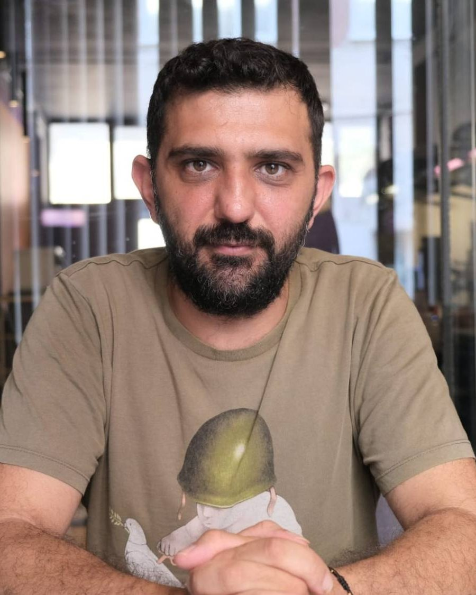
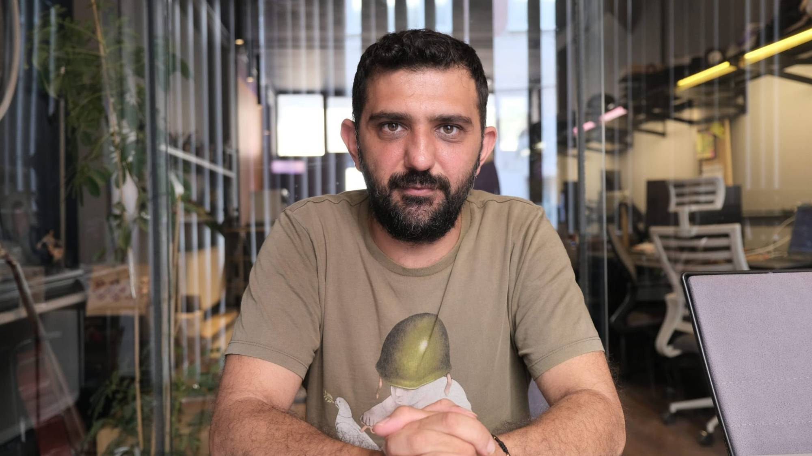

Kaygı neden bir düşman değildir?
Kaygıyı susturmaya çalışmak yerine ne söylediğini dinlemek üzerine.
Okumaya devam et: Kaygı neden bir düşman değildir?Ad Soyad · Psikolog
Yetişkinlerle sanat psikoterapisi, varoluşçu ve psikanalitik yaklaşımlarla çalışıyorum. Yüz yüze ve online seanslar.

Çalışma alanları
Birlikte çalışabileceğimiz başlıklardan bazıları. Kaydırarak ilerleyebilirsiniz.

Hakkımda
Doğuş Üniversitesi Psikoloji bölümünden yüksek onur derecesiyle mezun oldum. Şu anda Gedik Üniversitesi Klinik Psikoloji Yüksek Lisans programında tez aşamasındayım; tezimde otantiklik, kaygı ve somatizasyon arasındaki ilişkiyi inceliyorum.
Varoluşçu Akademi'deki mezuniyet tezimi "Psikanalizden varoluşçuluğa kaygı kavramı" üzerine yazdım ve bu çalışmayı "Kaygının Anlamı" başlığıyla çeşitli kurumlarda sunmaya devam ediyorum.
Yetişkinlerle; sanat psikoterapisi, varoluşçu psikoterapi ve psikanalitik psikoterapi çerçevesinde çalışıyorum. Bugüne kadar birçok sivil toplum kuruluşunda çocuklar ve yetişkinlerle gönüllü çalışmalar yürüttüm.
Eğitimlerime göz atınYaklaşımım
Yetişkinlerle sanat psikoterapisi, varoluşçu psikoterapi ve psikanalitik psikoterapi çerçevesinde çalışıyorum.
Her şey kelimelerle anlatılamaz. Resim, kolaj ve serbest malzemeyle çalışarak içinizde olup bitene bir biçim veriyoruz. Yetenek ya da sanat geçmişi gerekmez; önemli olan ortaya çıkan eser değil, o süreçte fark ettiklerinizdir.
Anlam, özgürlük, yalnızlık, seçim ve ölümlülük… Hepimizin bir gün karşılaştığı temel sorular. Varoluşçu yaklaşımda belirtilerin ötesine, hayatınızı nasıl yaşadığınıza ve kim olmak istediğinize bakıyoruz.
Bugün tekrar eden örüntülerin, ilişkilerin ve duyguların geçmişteki izlerini birlikte keşfediyoruz. Bilinçdışı süreçleri anlamak, tekrarlardan çıkıp yeni seçimler yapmaya alan açar.
Süreç
Süreç kısa bir tanışmayla başlar; sıklığı ve süresi ihtiyaca göre birlikte belirlenir.
Kısa bir telefon görüşmesi ya da mesajla ihtiyacınızı konuşuyoruz.
Sizi neyin getirdiğini, beklentilerinizi ve çalışma çerçevesini birlikte belirliyoruz.
Genellikle haftada bir, 50 dakikalık seanslar; yüz yüze ya da online.
Görüşmelerde paylaşılan her şey etik ilkeler çerçevesinde gizli tutulur.
Eğitim
Akademik eğitim, psikoterapi eğitimleri ve gönüllü çalışmalar.
Lisans
Psikoloji
Yüksek onur derecesi
Yüksek Lisans
Klinik Psikoloji · Tez aşamasında
Tez: "Otantiklik, Kaygı ve Somatizasyon İlişkisinin İncelenmesi"
2 yıl
Varoluşçu Psikoterapi Temel Analiz Eğitimi
Mezuniyet tezi: "Psikanalizden Varoluşçuluğa Kaygı Kavramı"
1 yıl
Psikanalitik Psikoterapi Eğitimi
1 yıl
Sanat Terapisi Eğitimi
Gönüllü çalışmalar
Çeşitli sivil toplum kuruluşlarında çocuklar ve yetişkinlerle
“Kaygı, özgürlüğün baş dönmesidir.”
Sunum
Psikanalizden varoluşçuluğa
Varoluşçu Akademi mezuniyet tezime dayanan bu sunumda kaygının psikanalitik kuramdan varoluşçu düşünceye nasıl anlaşıldığını anlatıyorum. Kaygıyı yalnızca giderilmesi gereken bir belirti olarak değil, bize bir şey söyleyen bir deneyim olarak ele alıyorum. Kurum ve topluluklardan gelen sunum davetlerine açığım.
Sunum daveti için yazınBlog
Kaygı, beden, sanat ve otantiklik üzerine notlar.
Kaygıyı susturmaya çalışmak yerine ne söylediğini dinlemek üzerine.
Okumaya devam et: Kaygı neden bir düşman değildir?Açıklanamayan ağrıların ve bedensel yakınmaların duygusal karşılıkları.
Okumaya devam et: Beden konuştuğunda: SomatizasyonKısa cevap: hayır. Uzun cevap bu yazıda.
Okumaya devam et: Sanat terapisi için yetenekli olmak gerekir mi?Başkalarının beklentileriyle kendi sesimiz arasındaki mesafe üzerine.
Okumaya devam et: Otantiklik: Kendin olmak neden bu kadar zor?SSS
Hayır. Amaç güzel bir eser üretmek değil; malzemeyle kurduğunuz ilişki ve ortaya çıkanın size düşündürdükleri.
Seanslar 50 dakikadır ve genellikle haftada bir yapılır. Sürecin sıklığı ve süresi ihtiyaca göre birlikte belirlenir.
Görüntülü görüşme ile yapılır. Kesintisiz, sessiz ve kendinizi rahat hissettiğiniz bir ortam yeterlidir.
Şu anda yalnızca yetişkinlerle (18 yaş ve üzeri) çalışıyorum.
Evet. Paylaştıklarınız etik ilkeler ve yasal çerçeve dahilinde gizli tutulur.
İletişim
Ön görüşme için formu doldurabilir ya da doğrudan yazabilirsiniz; size dönüş yapıp uygun bir zamanı birlikte belirleriz.